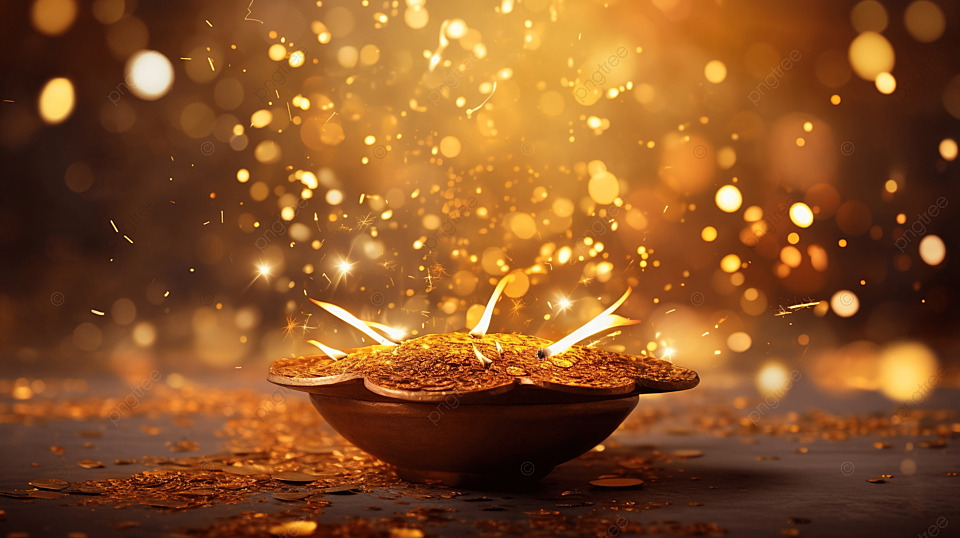

Diwali

Diwali, also known as the Festival of Lights, is one of the most important festivals in Hindu culture. It usually falls between October and November and symbolizes the victory of light over darkness and good over evil. The festival lasts for five days, with each day having its own significance and customs.Diwali, also known as the Festival of Lights, is one of the most important festivals in India and among various cultures around the world. It usually falls between October and November and lasts for five days, with the main celebration occurring on the third day, known as Lakshmi Puja.
Significance:
Cultural Importance:
Diwali symbolizes the victory of light over darkness and good over evil. It is associated with various legends, including the return of Lord Rama to Ayodhya after defeating Ravana and the worship of Goddess Lakshmi, the deity of wealth and prosperity.
Celebration:
People celebrate by lighting oil lamps (diyas), decorating their homes with colorful rangoli, and bursting fireworks. Homes are often cleaned and decorated to welcome prosperity.
Traditions:
Families come together to perform rituals, share sweets, and exchange gifts. Special prayers are offered to seek blessings for wealth and happiness.
Global Observance:
While primarily celebrated in India, Diwali is also observed by Hindu communities worldwide, including in Nepal, Sri Lanka, Malaysia, and the Caribbean.